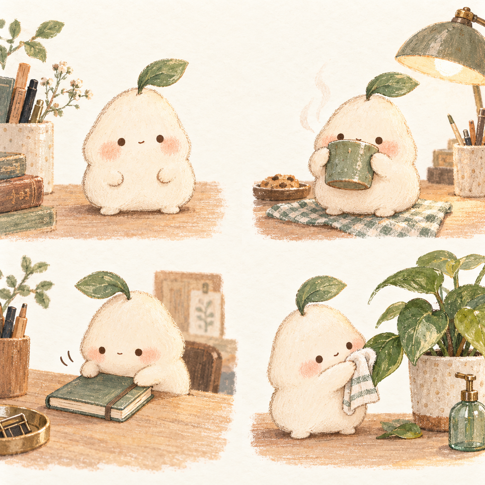
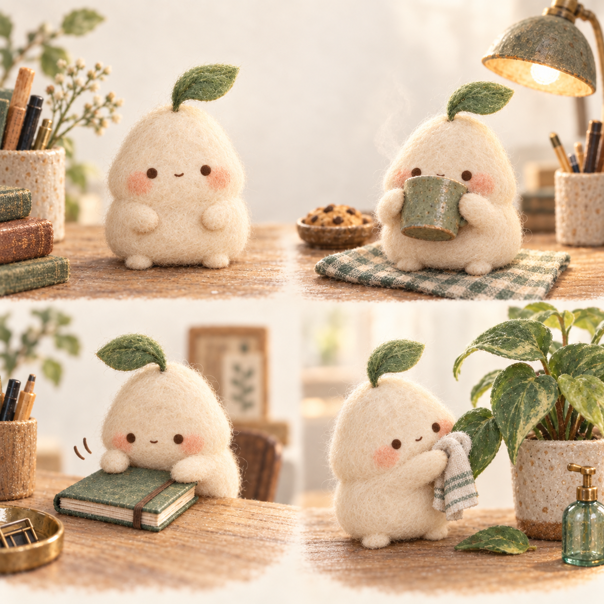

A · 纸上的小生命
色铅笔、纸张颗粒、轻微不规则。看的是手作感和角色接触物件的方式。
质感方向和动作机制分开比较：喜欢哪种画面，哪些动作才像文案说的那样。

色铅笔、纸张颗粒、轻微不规则。看的是手作感和角色接触物件的方式。

羊毛纤维、柔软体积、微缩道具。保持角色和动作相近，主要比较材质。
以上是 AI 生成的原创方向草图，未替换桌面形象；不是动画素材。收藏笔记的深读尚未完成，不代表已确认你的审美偏好。
固定母版角色 → 单独确认动作关键帧 → 静态图验收 → 只做一次的短动作 → 配到对应文案。
不靠每次重新描述“一个可爱角色”。轮廓、五官比例、叶芽、材质保持一致；只改变姿势与必要的道具。
下面是现有矢量角色的动作验证，不是上面两张草图的动画。每次只播放约 3 秒，然后停住。减少动画开启时只显示静态。